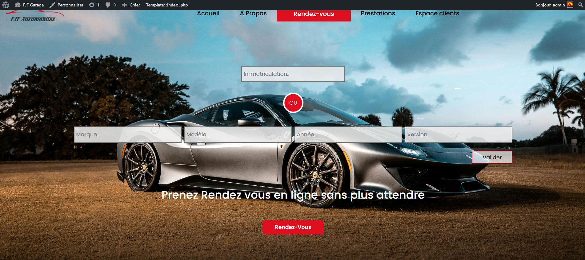
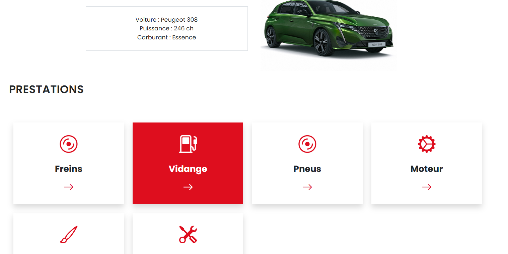
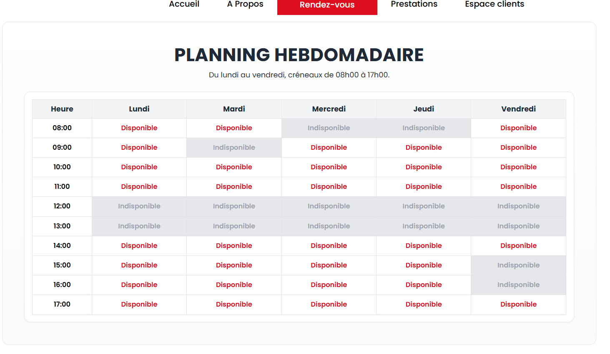
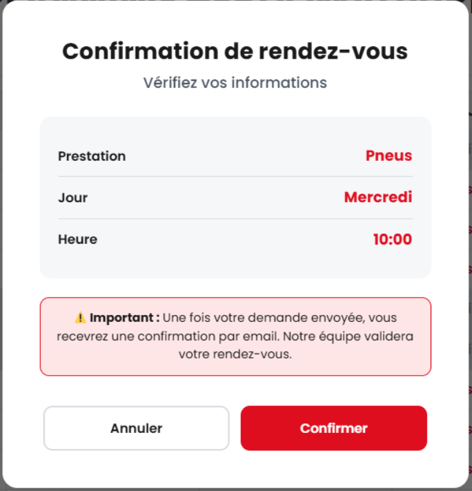
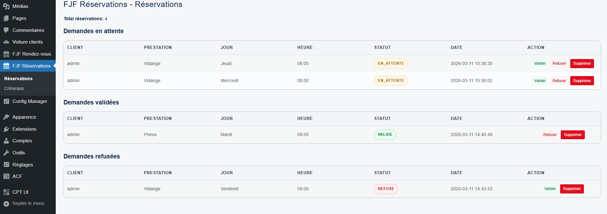
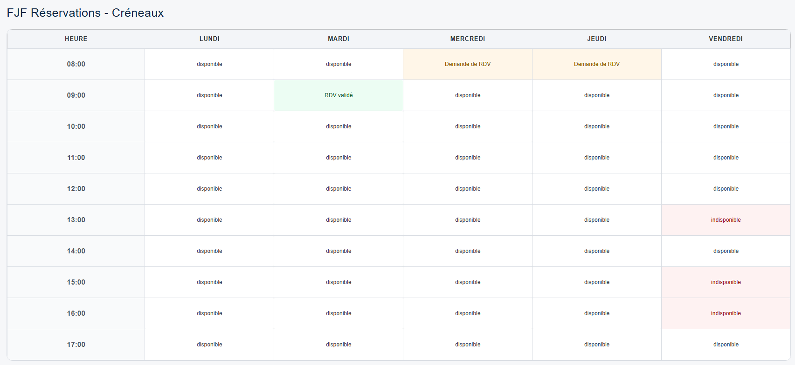
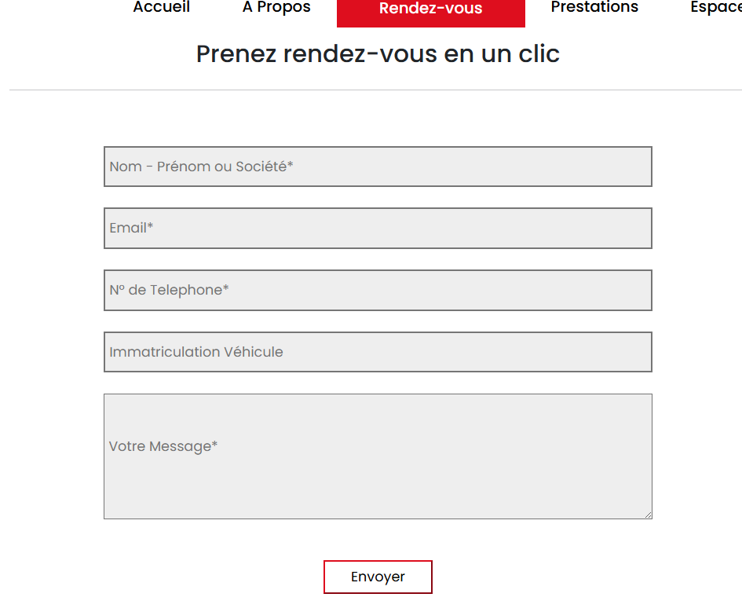
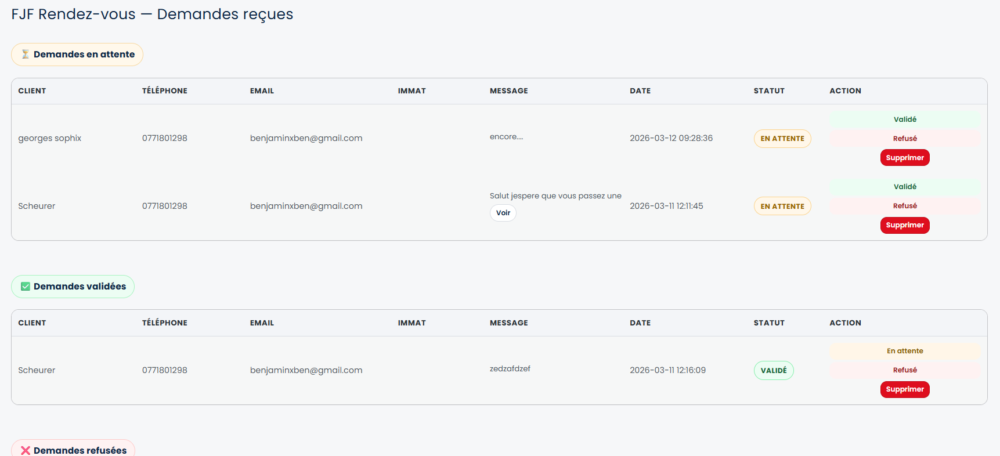

Refonte Digitale
FJF Automobiles
Stratégie, UX/UI Design et Développement technique pour le site web d'un garage automobile de réparation.
Rappel du Contexte
FJF Automobiles est un garage de réparation automobile, mais son image web ne reflète pas la qualité du service physique fourni à ses clients.
- Site web obsolète
- Navigation mobile difficile
- Prise de rendez-vous uniquement par téléphone
L'Enjeu
Comment transformer le site web en un outil de gestion client, capable de digitaliser la prise de rendez-vous et les services ?
Un Outil Digital au Service du Garage
"Une plateforme sur-mesure, claire et efficace, conçue pour simplifier la prise de rendez-vous et renforcer la relation client."
Les 3 Piliers du projet
Espace Client & Donnees
Creation de compte client avec connexion/inscription, stockage des infos, gestion des vehicules et suivi de l'historique des rendez-vous.
Performance
Un site léger et performant, optimisé pour une expérience utilisateur fluide et rapide.
Accessibilité
Une prise de rendez-vous en ligne simple, disponible 24h/24, pour faciliter le contact client.
À qui s'adresse le site ?
Deux parcours utilisateurs principaux à optimiser :
Le Client Régulier
Il connaît déjà le garage. Il a besoin de prendre rendez-vous rapidement, de suivre ses interventions passées et d'accéder à son espace personnel.
Le Nouveau Prospect
Il cherche un garage de confiance. Il veut que ce soit rapide mais sécurisé pour rapidement prendre rendez-vous pour sa voiture.
Design System
Palette de couleurs.
Design System
Choix typographiques et lisibilité.
Montserrat
Typographie de Titrage
Caractère géométrique, fort et imposant. Idéal pour les titres marketing et l'identité de marque.
Poppins
Typographie de Texte
Ronde et lisible. Elle garantit un confort de lecture optimal pour les pages de services et les informations pratiques.
Composants UI
Une interface claire et rassurante: rapide, simple et facile a utiliser pour tous les clients.
Pourquoi ca marche
- Facile d'utilisation
- Rapide a comprendre
- Simple sur mobile
Action principale visible en 1 clic
Administration Simplifiée
Le site est équipé d'outils puissants pour l'équipe FJF afin de gérer les rendez-vous et les clients facilement.
Gestion des RDV
Interface d'administration pour visualiser, confirmer ou annuler les rendez-vous clients en temps réel.
Espace Clients
Chaque client dispose d'un espace personnel pour suivre ses interventions et gérer ses réservations.
Plugins WordPress Développés
3 plugins PHP entièrement développés et intégrés au thème FJF-Theme.
fjf-rdv
Prise de rendez-vous avec formulaire personnalisé et gestion admin.
fjf-reservations
Suivi et gestion des réservations depuis l'interface WordPress.
cruziplug
CPT Voitures avec champs personnalisés pour la gestion du parc atelier.
Petit tour du site
Etape 1: Page d'accueil/ Plaque d'immatriculation.

Petit tour du site
Etape 2: Choix prestations.

Petit tour du site
Etape 3: Prise de rendez-vous.

Petit tour du site
Etape 4: confirmation du planning.

Coté admin
Plugin Resa horaires.

Plugin fjf-rdv
Plugin fjf-reservationsParcours Rendez-vous en 3 étapes
Plugin Reservation / Message client

Formulaire RDV
FJF rdv pluginStack Technologique
Une base robuste, sécurisée et évolutive reposant sur les standards du marché.
WordPress CMS
Cœur
Logique
Interactions
Design
Sécurité
Prochaines Fonctionnalités
Bientôt
Page de connexion client
Priorité
Espace client personnalisé
Ensuite
Historique des interventions
Après
Notifications RDV et rappels
Place aux Questions
Merci de votre attention.
Nous sommes à votre écoute pour échanger sur le projet.